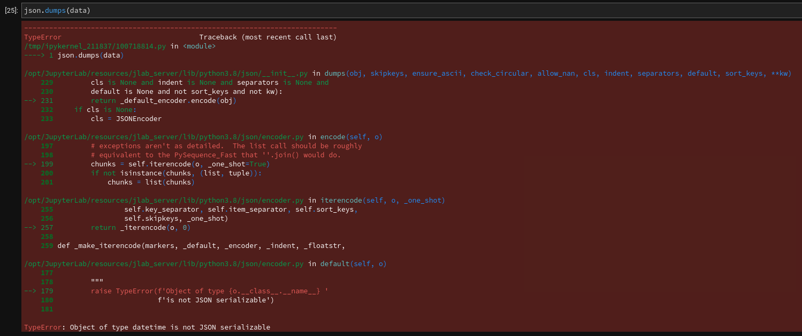
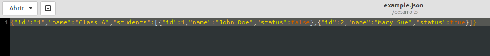

Introducción a orjson
Posted on jue 20 enero 2022 in Tutorial Python • 4 min read
ORJSON es una librería alternativa al soporte de json de Python que permite trabajar con dataclasses, datetimes y numpy.
Características de orjson:
- Serializar dataclass.
- Serializar objetos datetime, numpy.ndarray y UUID nativamente.
- Serializar a byte en vez de string.
- Serializar string sin escapado de unicode a ASCII.
- Más rápido para serializar y desserializar.
- No tiene load() y dump() para leer o escribir de o a un archivo.
Instalación
Para instalar se usará pip:
pip install orjson
Implementación
- Primero se importa el módulo:
import orjson
from datetime import datetime
import uuid
Aparte se importa datetime y uuid.
- Definir los datos.
dato = {
"emoji_lagrimas": "😂",
"emoji_reloj": "⏰",
"entero": 123,
"flotante": 10.4,
"boleano": False,
"lista": ["element1", "element2"],
"diccionario": {"key1": "value1", "key2": "value2"},
"ruso": "Привет",
"chino": "您好",
"japones": "こんにちは",
"datetime": datetime.now(),
"uuid": uuid.uuid1()
}
print(data)
{'emoji_tears': '😂', 'emoji_clock': '⏰', 'integer': 123, 'float': 10.4, 'boolean': False, 'list': ['element1', 'element2'], 'dict': {'key1': 'value1', 'key2': 'value2'}, 'russian': 'Привет', 'chinese': '您好', 'japanese': 'こんにちは', 'datetime': datetime.datetime(2022, 1, 20, 19, 25, 28, 555227), 'uuid': UUID('40d49edc-7a48-11ec-865d-9078414427c1')}
Se tiene un diccionario con varios tipos de datos y string.
Al imprimir el dato se muestra el objeto UUID y datetime.
- Serializar y retornar un binario en vez de un string
json_byte = orjson.dumps(data)
print(json_byte)
b'{"emoji_tears":"\xf0\x9f\x98\x82","emoji_clock":"\xe2\x8f\xb0","integer":123,"float":10.4,"boolean":false,"list":["element1","element2"],"dict":{"key1":"value1","key2":"value2"},"russian":"\xd0\x9f\xd1\x80\xd0\xb8\xd0\xb2\xd0\xb5\xd1\x82","chinese":"\xe6\x82\xa8\xe5\xa5\xbd","japanese":"\xe3\x81\x93\xe3\x82\x93\xe3\x81\xab\xe3\x81\xa1\xe3\x81\xaf","datetime":"2022-01-20T19:20:56.518677","uuid":"9f8d3b92-7a47-11ec-865d-9078414427c1"}'
Como se muestra en la salida, ahora no se tiene un string si no un binario. El campo datetime y uuid ya no son objetos.
- Usar el módulo json
Al intentar convertir a json el diccionario data. Este devolverá error.

- Deserializar json_byte
json_data = orjson.loads(json_byte)
print(json_data)
{'emoji_tears': '😂',
'emoji_clock': '⏰',
'integer': 123,
'float': 10.4,
'boolean': False,
'list': ['element1', 'element2'],
'dict': {'key1': 'value1', 'key2': 'value2'},
'russian': 'Привет',
'chinese': '您好',
'japanese': 'こんにちは',
'datetime': '2022-01-20T19:25:28.555227',
'uuid': '40d49edc-7a48-11ec-865d-9078414427c1'}
```
Al desserializar ya los objetos son string.
### Argumentos adicionales para serialización
Se puede pasar los siguientes parámetros:
* default: Un invocable que devuelve un tipo compatible.
* option: Para modificar cómo se serializan los datos a través de una constante entera en orjson.
#### Default
Si se tiene una entrada de dato tipo Decimal.
```python
import decimal
orjson.dumps(decimal.Decimal("3.141592653"))
El intento de convertir un decimal devuelve error:
TypeError: Type is not JSON serializable. decimal.Decimal
Esto se soluciona usando el parámetro Default.
import decimal
import math
def default(obj):
if isinstance(obj, decimal.Decimal):
return str(obj)
raise TypeError
orjson.dumps(decimal.Decimal(f"{math.pi}"), default=default)
b'"3.141592653589793"'
En este caso se pasa un string que dentro pasa el valor de pi usando la librería math, se pasa como argumento default con una función que evalua si es un decimal, este lo convierte en un string, si no devuelve error.
Al final en vez de devolver error, devuelve un binario con el valor de pi.
Option
Permite definir el método de serialización.
import orjson
import datetime
import numpy as np
data = {
"datetime": datetime.datetime.now(),
"numpy": np.array([[1, 2], [3, 4]])
}
json_byte = orjson.dumps(data, option=orjson.OPT_NAIVE_UTC | orjson.OPT_SERIALIZE_NUMPY)
print(json_byte)
print(orjson.loads(json_byte))
b'{"datetime":"2022-01-20T19:48:45.924867+00:00","numpy":[[1,2],[3,4]]}'
{'datetime': '2022-01-20T19:48:45.924867+00:00', 'numpy': [[1, 2], [3, 4]]}
En este caso se pasa como opcion: orjson.OPT_NAIVE_UTC: para facilitar la conversión del datetime. orjson.OPT_SERIALIZE_NUMPY: para facilitar la conversión de numpy.
Detalles:
- OPT_APPEND_NEWLINE — Agrega \n .
- OPT_INDENT_2 — Identa a 2 espacios la salida .
- OPT_NAIVE_UTC — Serializa objetos datetime.datetime objects sin tzinfo como UTC.
- OPT_SERIALIZE_NUMPY — Serializa instancias de numpy.ndarray.
Dataclass
ORJSON serializa dataclass como maps, con cada atributo serializado.
import dataclasses, orjson, typing
@dataclasses.dataclass
class Person:
id: int
name: str
status: bool = dataclasses.field(default=True)
@dataclasses.dataclass
class Class:
id: int
name: str
students: typing.List[Person]
data = Class(1, "Class A", [Person(1, "John Doe", False), Person(2, "Mary Sue")])
json_byte = orjson.dumps(data)
print(json_byte)
print(orjson.loads(json_byte))
b'{"id":1,"name":"Class A","students":[{"id":1,"name":"John Doe","status":false},{"id":2,"name":"Mary Sue","status":true}]}'
{'id': 1,
'name': 'Class A',
'students': [{'id': 1, 'name': 'John Doe', 'status': False},
{'id': 2, 'name': 'Mary Sue', 'status': True}]}
En este ejemplo se define la clase Person con tres argumentos id (entero), name (string) y status (boleano), para el estatus se define el valor True por defecto.
También se define la clase Class con id (entero), name (string) y students (que es una lista de personas).
Luego se define la variable data que es una instancia de Class con sus datos.
Luego se serializa y desserializa.
Escritura/Lectura de archivos
Para escribir a un archivo se tiene la variable data del ejemplo anterior.
with open("example.json", "wb") as f:
f.write(orjson.dumps(data))
Al abrir el archivo se muestra el json:

Para leer el archivo json:
with open("example.json", "rb") as f:
json_data = orjson.loads(f.read())
print(json_data)
{'id': '1',
'name': 'Class A',
'students': [{'id': 1, 'name': 'John Doe', 'status': False},
{'id': 2, 'name': 'Mary Sue', 'status': True}]}
Para concluir, lo más útil de orjson es que permite o facilita el manejo de objetos datetime, uuid, facilita la conversión de tipo de datos decimal sin que genere error en la conversión como lo hace el módulo json de python.
Referencias:
- Choosing a faster JSON library for Python
- orjson — A fast json parser for python (artículo en inglés en el que se baso este artículo)
- Rendimiento de orjson
- Repositorio github
¡Haz tu donativo! Si te gustó el artículo puedes realizar un donativo con Bitcoin (BTC) usando la billetera digital de tu preferencia a la siguiente dirección: 17MtNybhdkA9GV3UNS6BTwPcuhjXoPrSzV
O Escaneando el código QR desde la billetera: